 

Spike Jonze, producer and film- maker (most known for his recent work “her”) comes to RISD this Fall to share his experience in the film-making industry. He will discuss the processes of hiw own film productions, including his role as a director and screen-writer.
Sergey Brin, the co-founder of Google Inc., Shares his story of achieving his goals from a humble start. He will discuss how Google came to become today and how he sees Google in the future.
Eddie Frederick, the co-founder of LivingSocial--a popular app for purchasing products and sharing the best deals with other customers--comes to RISD in May to discuss his story of how his successful company came around Seven years ago.